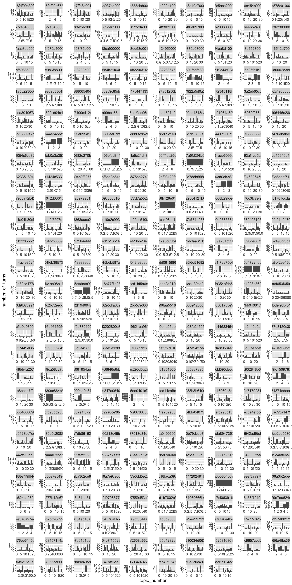
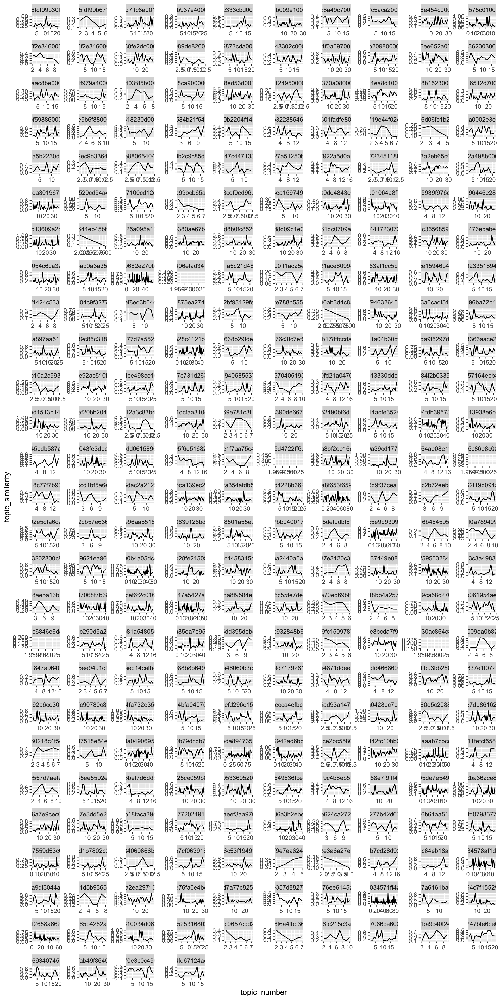
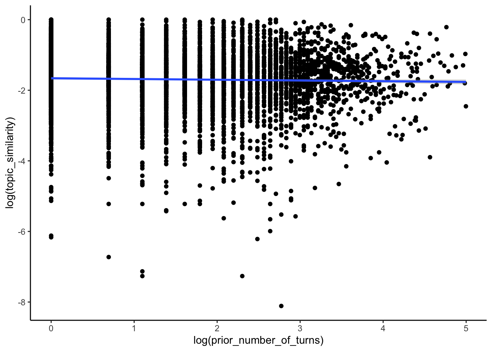
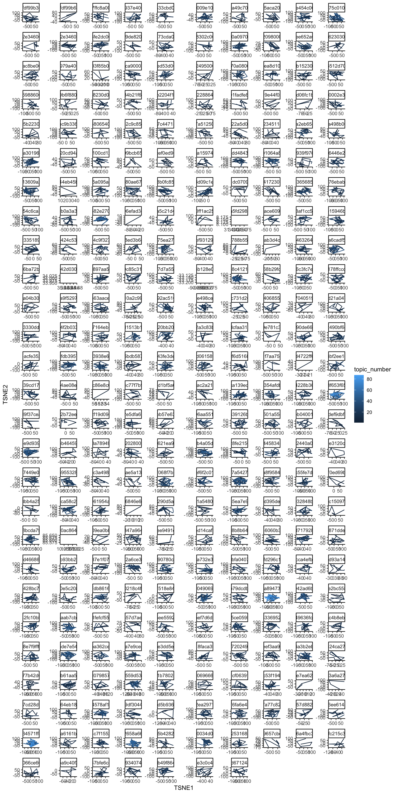
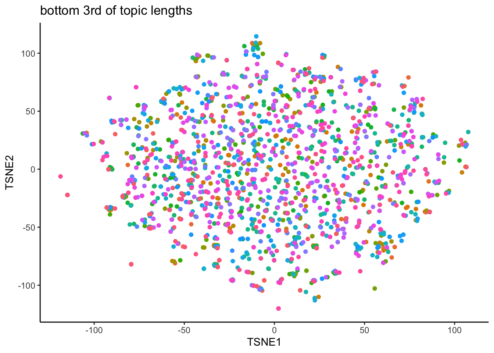
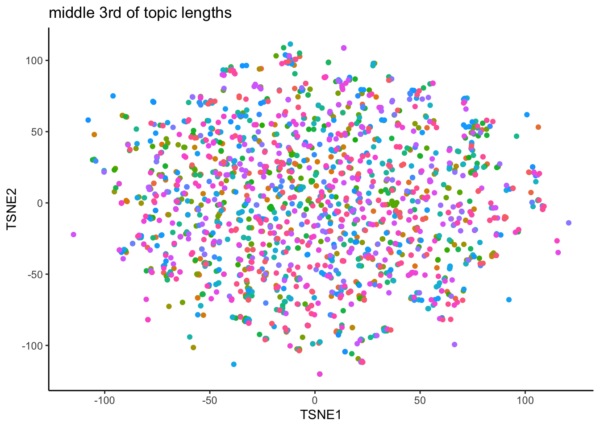
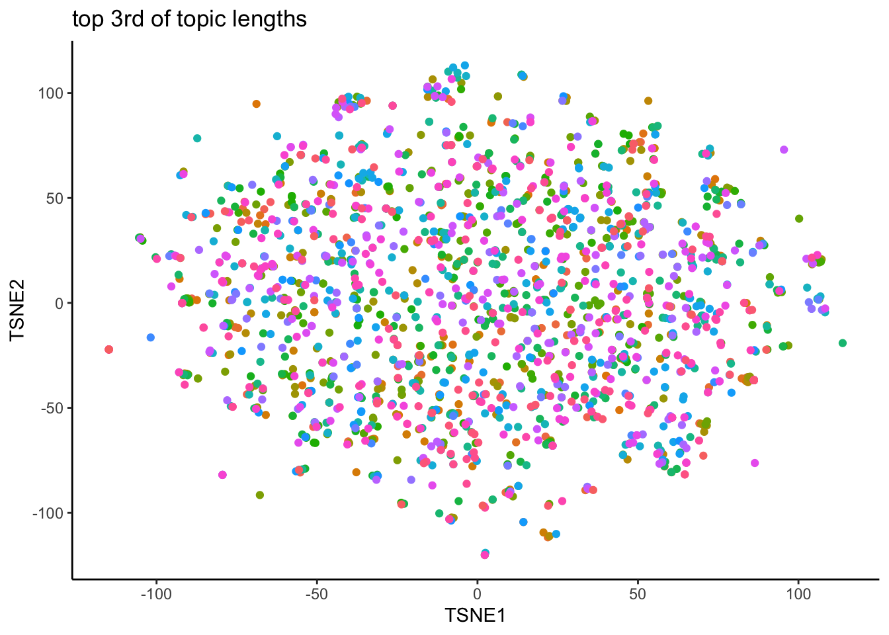
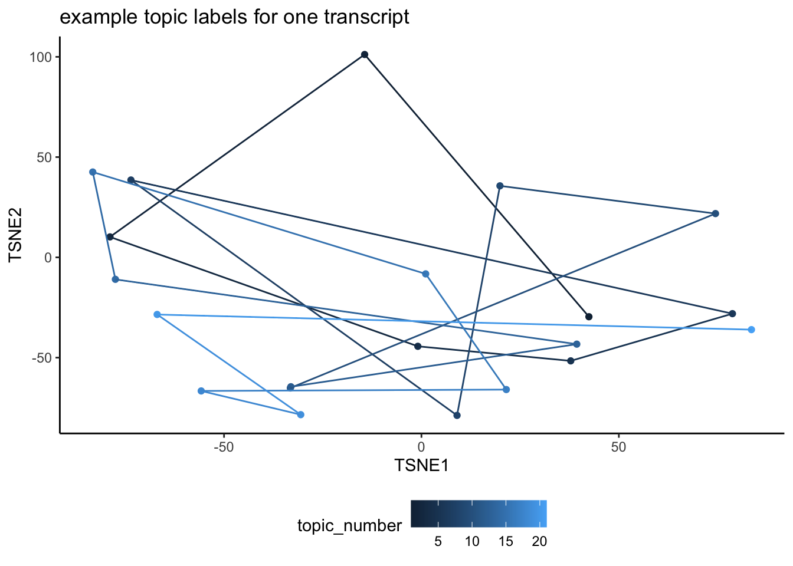

Nov. 2024 - Using dense samples 1 and 2 of annotated transcripts
# load datadf_raw <-read.csv("./data/processed/dense_subset1_and_subset2_processed.csv")# copy to editable data framedf <- df_raw# rename participant ID columnnames(df)[21] <-"PID"# print number of transcriptspaste0("number of annotated transcripts = ", length(na.omit(unique(df$transcript_id))), sep ="")
[1] "number of annotated transcripts = 155"
# print number of participantspaste0("number of participants = ", length(na.omit(unique(df$PID))), sep ="")
[1] "number of participants = 268"
# re-scale turn ids so each transcript goes from is 0 - 1df <- df |>group_by(transcript_id) |>arrange(turn_id, .by_group =TRUE) |>mutate(scaled_turn_id =rescale(turn_id))# save list of annotated transcript IDsannotated_IDs <-unique(df$transcript_id)# how many participants annotated each transcript?annotation_info <- df |>group_by(transcript_id) |>summarize(number_annotators =length(na.omit(unique(PID))))# fill topics, ensuring PID and topic labels don't overlap between transcriptsdf <- df |>fill(new_topic, .direction ="down") |>fill(PID, .direction ="down")# replace "new_topic" NAs at start with "Starting The Call"df$new_topic[is.na(df$new_topic)] <-"Starting The Call"# remove rows with starting the calldf <- df |>filter(new_topic !="Starting The Call")# previewhead(df)
Calculate the number of turns per topic for each annotator.
# get number of turns per topic per annotator and get average topic length per annotatortopic_lengths <- df |>group_by(transcript_id) |>arrange(turn_id, .by_group =TRUE) |># ensure topics are in the right orderungroup() |>group_by(PID, new_topic) |>summarize(number_of_turns =length(turn_id)) |>mutate(average_turn_length =mean(number_of_turns))
`summarise()` has grouped output by 'PID'. You can override using the `.groups`
argument.
# average number of turns across all topicsRmisc::summarySE(topic_lengths, measurevar ="number_of_turns")
.id N number_of_turns sd se ci
1 <NA> 5927 9.564873 18.34603 0.2383004 0.4671555
# get average topic length across all annotatorstopic_lengths_summary <- topic_lengths |>select(PID, average_turn_length) |>ungroup() |>distinct()# average number of turns across participant averagesRmisc::summarySE(topic_lengths_summary, measurevar ="average_turn_length")
.id N average_turn_length sd se ci
1 <NA> 268 12.11362 24.72049 1.510044 2.973109
# add topic number to topic_lengthstopic_lengths <- topic_lengths |>group_by(PID) |>mutate(topic_number =1:n())# plot average topic turn trajectoryggplot(data = topic_lengths, aes(x = topic_number, y = number_of_turns)) +facet_wrap(.~PID, ncol =10, scales ="free") +geom_bar(stat ="identity")

# save topic lengthswrite.csv(topic_lengths, "/Users/tuo70125/My Drive/SANLab/Experiments/Conversation-Structure/data/processed/topic_labels_all.csv", row.names =FALSE)
# get sbert embeddings of topic labelssave_topics <- topic_lengths |>select(PID, topic_number, new_topic)# get old/new topics# first row has no previous topic, current vs. prior rather than old vs. now# how does length of stretch of last topic predict distance jumped in topic spacesave_topics <- save_topics |>group_by(PID) |>mutate(current_topic = new_topic,current_topic_number = topic_number,prior_topic =lag(new_topic),prior_topic_number =lag(topic_number))save_topics <- save_topics |>na.omit()write.csv(save_topics, "./data/processed/topic_labels.csv", row.names =FALSE)
Length of utterances near end of topic (shorten/lengthen?) Also look at time rather than number of turns how long was starting the call # turns
dimensionality reduction over topic labels 2D reduced dimension set for topics, show some example conversations of where they go (do they start more similar and then go in more idiosyncratic directions)
which partner tends to initiate more topics?
examine topic shift drivers amongst the conversation partners
dimensionality reduction (a la pca)
send robert/ slack plot of previous topics no relationship but change in variability as previous turn length changes
# plot trajectory of similarity in topic labels per annotated conversationggplot(topics, aes(x = topic_number, y = topic_similarity)) +facet_wrap(.~PID, ncol =10, scales ="free") +geom_point(alpha =0) +geom_line()
`geom_line()`: Each group consists of only one observation.
ℹ Do you need to adjust the group aesthetic?
`geom_line()`: Each group consists of only one observation.
ℹ Do you need to adjust the group aesthetic?
`geom_line()`: Each group consists of only one observation.
ℹ Do you need to adjust the group aesthetic?
`geom_line()`: Each group consists of only one observation.
ℹ Do you need to adjust the group aesthetic?
`geom_line()`: Each group consists of only one observation.
ℹ Do you need to adjust the group aesthetic?

# left join similarities w/ topic_lengthssimilarity <-left_join(topics, topic_lengths, by =c("PID", "topic_number", "new_topic"))similarity <- similarity |>mutate(prior_number_of_turns =lag(number_of_turns),subsequent_number_of_turns =lead(number_of_turns)) similarity <- similarity |>filter(prior_number_of_turns <150, subsequent_number_of_turns <150)ggplot(similarity, aes(x =log(prior_number_of_turns), y =log(topic_similarity))) +geom_point() +geom_smooth(method ="lm", formula = y ~ x) +theme_classic()
Warning in log(topic_similarity): NaNs produced
Warning in log(topic_similarity): NaNs produced
Warning: Removed 124 rows containing non-finite outside the scale range
(`stat_smooth()`).
Warning: Removed 124 rows containing missing values or values outside the scale range
(`geom_point()`).

ggplot(similarity, aes(x =log(subsequent_number_of_turns), y =log(topic_similarity))) +geom_point() +geom_smooth(method ="lm", formula = y ~ x) +theme_classic()
Warning in log(topic_similarity): NaNs produced
Warning in log(topic_similarity): NaNs produced
Warning: Removed 124 rows containing non-finite outside the scale range
(`stat_smooth()`).
Warning: Removed 124 rows containing missing values or values outside the scale range
(`geom_point()`).
Topic label clustering
tsne_topics <-read.csv("./data/output/topic_tsne.csv")# filter out topics that go longer than 100 turnstsne_topics <- tsne_topics |>filter(number_of_turns <=100)
# plot trajectory of similarity in topic labels per annotated conversationggplot(tsne_topics, aes(x = TSNE1, y = TSNE2, color = topic_number)) +facet_wrap(.~PID, ncol =10, scales ="free") +geom_point(alpha =0) +geom_path() +theme_classic()
`geom_path()`: Each group consists of only one observation.
ℹ Do you need to adjust the group aesthetic?
`geom_path()`: Each group consists of only one observation.
ℹ Do you need to adjust the group aesthetic?
`geom_path()`: Each group consists of only one observation.
ℹ Do you need to adjust the group aesthetic?
`geom_path()`: Each group consists of only one observation.
ℹ Do you need to adjust the group aesthetic?

# how do longs vs short topics cluster in 2D space?# upper third, middle third, lower thirdtsne_topics <- tsne_topics |>mutate(turns_category =case_when(ntile(number_of_turns, 3) ==1~"bottom",ntile(number_of_turns, 3) ==2~"middle",ntile(number_of_turns, 3) ==3~"top" ))top_topics <- tsne_topics |>filter(turns_category =="top")middle_topics <- tsne_topics |>filter(turns_category =="middle")bottom_topics <- tsne_topics |>filter(turns_category =="bottom")# plot bottom third of number of turns in a topicggplot(bottom_topics, aes(x = TSNE1, y = TSNE2, color = PID)) +geom_point() +theme_classic() +labs(title ="bottom 3rd of topic lengths") +theme(legend.position ="none")

# plot middle third of number of turns in a topicggplot(middle_topics, aes(x = TSNE1, y = TSNE2, color = PID)) +geom_point() +theme_classic() +labs(title ="middle 3rd of topic lengths") +theme(legend.position ="none")

# plot top third of number of turns in a topicggplot(top_topics, aes(x = TSNE1, y = TSNE2, color = PID)) +geom_point() +theme_classic() +labs(title ="top 3rd of topic lengths") +theme(legend.position ="none")

# example annotationtest <- tsne_topics |>filter(PID =="[False, '55b10b48fdf99b30f80e3993', None]")ggplot(test, aes(x = TSNE1, y = TSNE2)) +geom_point(aes(color = topic_number)) +geom_path(aes(color = topic_number)) +theme_classic() +labs(title ="example topic labels for one transcript") +theme(legend.position ="bottom")

ggplot(bottom_topics, aes(x = TSNE1, y = TSNE2, color = PID)) +geom_point(alpha =0) +geom_path() +theme_classic() +theme(legend.position ="none")